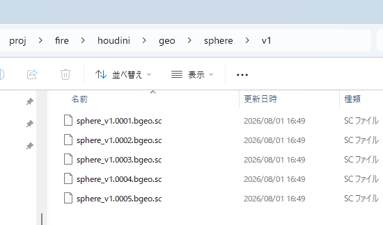

最初にやること
Launcherを起動したら、Houdini Installation、Project、Task、HIPの順に選択します。
Launcherを起動 start_houd2launcher.batをダブルクリックします。Houdiniを登録 Launcher Settings → Houdini Installations → Auto Detect を実行します。通常は初回だけです。Projectを選択 左のProjectsから作業Projectを選びます。既存ProjectはAdd Existing Project で登録できます。 Taskを選択 中央のTask一覧から作業対象を選択します。 HIPを開く 右のHIPタブでVersionを選択し、OpenまたはOpen Read Onlyを実行します。
Projects 作品・案件のルート。Project設定とTask一覧を所有します。
Tasks Shot、Asset、Effectなどの作業単位。HIPとCacheをまとめます。
HIP Launcher管理のHoudini Scene Versionです。
画面の見方
場所 役割 主な右クリック操作
左: Projects Projectの切替と登録状態の管理 New Task、Project Settings、Import Task Package、Open in Explorer 中央: Tasks Task検索、並べ替え、サムネイル表示 New HIP、Version関連、Task Package、Archive、完全削除 右: Task Details Overview、HIP、Caches、Settings、History HIPを開く、Version Up、Cache確認・削除
操作は各一覧の右クリックが基本 TaskやProjectを選択して右クリックすると、その対象に使える操作だけが表示されます。フォルダを見たい場合はOpen in Explorer です。
HIPを作成・開く・Version Up
New HIP
Taskを選択し、Task右クリックまたはHIPタブからNew HIP を実行します。選択したHoudiniのhython.exeが正しいライセンス形式の空HIPを作ります。
.hiplcIndie / Limited Commercial。
Open
HIPごとの推奨Houdini、Task推奨、Project既定、Launcher既定の順にVersion候補が決まります。選択InstallationにFXとCoreの両方がある場合はOpenダイアログのEdition で選択でき、既定はHoudini FXです。Windowsのファイル関連付けは使わず、FXはhoudinifx.exe、Coreはhoudinicore.exeを直接起動します。
Open Read Only
元HIPを変更しない一時コピーを開きます。内容確認や過去Versionの参照に使います。
Version Up
選択HIPを次の空きVersionへコピーし、新しいHIPメタデータを作ります。既存Versionは上書きしません。
ExplorerでHIP名を勝手に変更しない Launcherの命名規則とメタデータが一致しなくなります。Task名の変更やVersion UpはLauncherから行ってください。
作業フォルダとパス
標準構成では、Task直下にLauncher管理情報の.houd2とHoudini作業用のhoudiniがあります。
{project_root}/
├─ .houd2/
│ └─ project.json Projectの正本設定
└─ {task_name}/
├─ .houd2/
│ ├─ task.json Taskの正本設定
│ ├─ hips/*.json HIPごとのメタデータ
│ ├─ thumbnail.png Taskサムネイル
│ └─ thumbnails/ HIP Version画像
└─ houdini/ Houdiniでは通常ここが $HIP / $JOB
├─ {task}_v001_{user}.hiplc
├─ geo/{cache_name}/v1/ geo_cache Role
├─ abc/ alembic Role
└─ export/ export Role
物理フォルダ名よりRoleを使う Projectごとにgeoの名前を変えても、Launcherはgeo_cache Roleから正しい場所を解決します。
Cacheの確認と削除
HIPを選択してCaches タブを開くと、Projectのgeo_cache Role配下に存在する既知形式をすべて走査します。Cache名が親、その下にVersionが表示されます。
USED / 緑 選択HIP内で実際にLoad中のノードが、そのVersionの実効出力パスを参照しています。
UNUSED / 赤 ディスクには存在しますが、選択HIP内では現在読まれていないVersionです。
標準File Cacheはloadfromdiskが有効でBypassされていない場合だけUsed判定に使います。HouD2 Cache Inは、選択中のCacheとVersionから解決した実ファイルパターンを直接Used判定へ渡します。フレーム範囲の一致は条件ではありません。検索、Used/Unusedフィルター、容量順ソートができます。
geo/{cache_name}/{version}/{cache_name}_{version}.{frame}.bgeo.sc
例:
D:\proj\fire\houdini\geo\sphere\v1\sphere_v1.0001.bgeo.sc

Cache名の下にVersionフォルダ、その中にフレーム連番を置く標準例。
Cache削除は完全削除 Version行はそのVersionだけ、親Cache行は全Versionを削除します。Trashには移動しません。緑のUsed Versionを含む場合は強い警告が出ます。
Cache Out / Cache In HDA
Cache Outで保存
パラメータ画面は標準File Cacheに近い構成です。Caching 、Save Filters 、Metadata 、Advanced に分かれ、内部のFile Cache SOPへ保存範囲、Simulation、属性・Group削除などを接続しています。
Geometryを接続 HouD2 Cache Outを作り、保存したいSOPをInputへ接続します。Cache Nameを確認 既定値は$OSで、ノード名がCache名になります。固定名にしたい場合は例としてexplosion_mainへ変更します。 保存 Save to Disk は範囲、Save Current Frame は現在フレームだけを書き出します。
geo/explosion_main/v003/
├─ geo/explosion_main.$F4.bgeo.sc
├─ cache_manifest.json
└─ cache_marker.bgeo.sc
実キャッシュの保存後、1ポイントのMarker GeometryをHDA出力にします。MarkerのDetail AttributeにはCache ID、Project/Task ID、相対File Pattern、Version、生成者、Frame、容量などが入り、パスワードや他PCの絶対パスは入りません。
Cache Inで読む
HouD2 Cache InはInput不要です。Project、Task、Cacheを順に選びます。VersionはLatest が既定で、Specific に切り替えると存在するVersionを選択できます。
Cache Informationには生成者、User ID、Machine ID、作成日時、フレーム範囲、FPS、容量、Source Project / Task、実効Pathが表示されます。別TaskのCacheは元TaskのローカルGeo Rootから直接読みます。
Launcherを起動したまま使う 別Project/TaskのメニューはLauncherのlocalhost Catalogから取得します。Current TaskはAPI停止時もローカルManifestからFallbackできます。
Sync to Localは将来機能 現在はローカルに存在するCacheだけを読みます。HDAのCook中に他PCへ接続したり、ネットワーク同期を開始したりはしません。
Taskを別ユーザーへ渡す
Export
Taskを右クリック Export Task Package... を選択します。保存先を選択 {task_name}_houd2packageフォルダが作られます。フォルダごと渡す 途中のファイルを抜かず、Packageフォルダ全体を渡します。
Import
移行先Projectを右クリック Import Task Package... を選択します。Packageフォルダを選択 全ファイルのSHA-256と危険なパスを検証します。 Previewを確認 容量、除外Cache、Project設定差分、Import後のTask名を確認してImportします。
Packageに入る Packageから除外 HIP、Task設定、HIPメタデータ、サムネイル、Houdini配下の非Cacheファイル、Manifest、Project Context geo_cache、vdb_cache、sim、alembicなどのCache Role、旧Cache Trash
同名Taskがある場合は_copy、_copy2のように別名化され、新しいTask IDと管理HIP名へ更新されます。元の$HIP相対参照はHIP内部を変更しないため維持されます。
Archiveと完全削除
操作 起きること 戻せるか
Archive Task task.jsonのStatusをarchivedへ変更。ファイルは残る。設定をActiveへ戻せる Delete Task Permanently... Taskフォルダ内のHIP、Cache、設定、サムネイルをすべて完全削除。 戻せない
完全削除はTask名の入力確認が必要 重要なTaskは先にTask Packageや別バックアップを作ってください。
よくある問題
UsedのはずのCacheがUnusedになる まず選択中のHIPを確認し、Refreshを実行します。File Cacheのloadfromdisk、Bypass、実効Versionを確認してください。HIPがv2を指し、ディスクにv1だけある場合、v1は正しくUnusedです。
File Cacheのv2が書き出せない Versionフォルダの制限より、書出しフレーム範囲を確認します。例としてStartが$FSTART = 1001、Endが固定5では範囲が逆です。Endを$FENDなど有効な値にします。
UNIQUE constraint failed: projects.root 同じProject Rootの古いローカルDB登録です。現在の版は同じRootとproject.jsonだと確認できた場合に自動修復します。Launcherを再起動してAdd Existingをやり直します。
HIPを作れない Launcher SettingsでHoudiniとhython.exeがValidか確認します。ライセンスにより拡張子が.hiplcや.hipncになるのは正常です。
HoudiniのFrame RangeがTask設定と違う Project SettingsのApply Task Frame Rangeが有効か確認します。Launcherは起動後にGlobal Range、Playback Range、FPS、Current Frameを適用します。
管理者の責任範囲
Project RootとProject名を決め、project.jsonを作成・保護する
Folder Roleと相対パスを定義する
HIP命名規則と既定ライセンス拡張子を決める
Frame Range、FPS、Simulation StartをTaskへ設定する
利用可能なHoudini VersionとFallback Policyを決める
共有してよい環境変数とSearch Pathを定義する
Task Packageの受け渡し、Cache再取得、完全削除の運用を決める
Projectを設計する
Projectの正本は{project_root}/.houd2/project.jsonです。各ユーザーのSQLiteは索引であり、Project JSONが常に優先されます。
設定グループ 決める内容 推奨
Identity Project名、説明、Root Rootは途中で移動しない。コピー時はProject IDの扱いを確認。 Default Frames Start、End、FPS、Sim Start Task作成時の初期値としてShot規約に合わせる。 Folders Key、Display Name、Role、Relative Path 物理名より意味のあるRoleを安定させる。 Naming HIP Template、Padding、Extension {task}_v{version:03d}_{user}.{extension}Houdini Policy Default Installation、Fallback、FPS/Range適用 Projectの互換要件に合わせる。
Project Rootは秘密情報ではないがローカル固有 Task PackageのProject Contextには絶対Rootを含めず、移行先Project設定も自動上書きしません。
Folder Roleと標準階層
Role 標準相対パス 用途 Task Package
geo_cachegeoBGEOなどのGeometry Cache。Cache一覧の管理Root。 除外 alembicabcAlembic Cache。 除外 exportexportCache以外の成果物。 含む
RoleはProject内で一意、Relative Pathも一意である必要があります。絶対パス、..、空セグメントは禁止です。Auto Create はTask作成時に自動生成するか、Enabled はRoleを有効にするかを決めます。
Cache命名の推奨
{role:geo_cache}/{cache_name}/v{version}/{cache_name}_v{version}.{frame:04d}.bgeo.sc
geo/smoke/v1/smoke_v1.1001.bgeo.sc
geo/smoke/v2/smoke_v2.1001.bgeo.sc
環境変数とExpression
環境変数は次の順で重ねられ、後の値が優先されます。Protected変数はユーザー設定で上書きできません。
Windows環境
Launcher設定
Project設定
Task設定
Protected HOUD2 / Frame
日常Expression向け変数
変数 内容 例
$TASK_NAME現在のTask名 fire$SHOT_FRAME_STARTTask Start 1001$SHOT_FRAME_ENDTask End 1100$SHOT_FPSTask FPS 24$SIM_FRAME_STARTSimulation Start 1001$JOBTaskのHoudini Root D:/show/fire/houdini
内部・監査向け変数
HOUD2_PROJECT_ID、HOUD2_PROJECT_ROOT、HOUD2_TASK_ID、HOUD2_TASK_ROOT、HOUD2_HOUDINI_ROOT、HOUD2_HIP_PATH、HOUD2_USER、HOUD2_HOUDINI_VERSION、HOUD2_HOUDINI_BUILDが起動時に供給されます。OverviewのExpression Environmentで実値を確認できます。
設定内テンプレート
{project}、{project_root}、{task}、{task_root}、{houdini_root}、{user}、{role:geo_cache}を使用できます。循環参照やUnknown TokenはHoudini起動前にエラーになります。
Houdini Version Policy
ユーザーPCごとにLauncher SettingsでInstallationをAuto Detectします。Installation IDはPC固有なのでTask Packageでは移行しません。
HIP推奨
Task推奨
Project既定
Launcher既定
最新Valid
Fallback Policy 運用
require_exact厳密な再現性が必要。指定Buildがなければ止める。 same_major_minor同じMajor.Minor内のBuild差を許容。 newer_compatibleより新しい互換候補を許容。 always_askユーザーに毎回確認。制作初期や混在環境向け。
設定配布とTask受け渡し
Settings Export / Import ProjectまたはTaskの設定項目をJSONで移す機能。Preview、差分、Backupがあります。制作規約の配布向けです。
Task Package HIPやメタデータを含むTask本体の受け渡し。Cacheは除外し、ManifestとSHA-256で完全性を検証します。
Task Package ImportはTarget Project設定を上書きせず、差分をPreview表示します。別名ImportではTask IDと管理HIP名を更新します。
Cache監査と容量管理
対象HIPを固定してからCacheタブをRefreshする
Used firstで現在の依存Versionを確認する
Size: Heavy firstで大容量Cacheを確認する
Unusedが本当に不要か、別HIP Versionでも確認する
親Cache削除は全Version、子行削除は対象Versionだけと理解する
Unusedは「全HIPで未使用」ではない 選択HIPで現在読まれていないという意味です。削除前に必要なHIP Versionを切り替えて確認してください。
Cache HDAとCatalogの運用
要素 正本・解決元 運用上の確認点
Cache Out HOUD2_GEO_ROOTとFolder RoleCache Nameは既定で$OS。命名規則に合わせてノード名を付ける。 Manifest cache_manifest.jsonCache ID、相対Pattern、Version、生成者、容量、Statusが揃っていること。 Marker cache_marker.bgeo.sc共有・同期用の軽量メタデータ。認証情報や他PCの絶対パスを含めない。 Cache In localhost Catalog、次にローカルManifest Project、Task、Cache、Latest/Specificの選択とCreator表示を確認する。 Launcher Caches 選択HIPのHython ProbeとRole全走査 HouD2 Cache Inの実効PatternがUsed Versionとして緑になること。
Catalog APIはLauncher実行中だけ有効な127.0.0.1サービスです。URLと一時TokenはHoudini起動時の環境へ渡され、HDAがSQLiteを直接読むことはありません。別Project/TaskのプルダウンはCatalogを利用し、Current TaskはローカルManifestへFallbackします。
HDA更新後の確認 houd2_cache.hdaを再ビルドしたら、既に開いているHoudiniではDefinitionをReloadするかHoudiniを再起動します。変更済みの既存Parameter値は保持され、既定値は新規ノードへ適用されます。
推奨運用チェックリスト
Project開始時
Folder Roleと命名テンプレートを承認 Houdini PolicyとFPSを承認 代表TaskでNew HIP、Open、Cache Pathを検証 Task PackageのExport/Importを小さなTaskで検証 Task受け渡し時
HIPを保存してLauncherをRefresh Used Cache名とVersionを記録 Task PackageをExport 受取側でChecksum PreviewとProject差分を確認 削除時
Archiveで十分か確認 必要ならPackageまたは別媒体へBackup Task名入力を確認して完全削除
DB管理画面
start_houd2_db_admin.batを実行すると、管理者向けの独立したlocalhost画面が開きます。
全Tableを検索・並べ替え・CSV/JSON Export SQLite Online BackupとIntegrity Check Project/Task JSONを正本にした索引修復 履歴削除とUI State Resetは自動Backup後に実行 Project/Taskの値はJSONが正本 DB画面はRaw SQLや直接セル編集を提供しません。設定変更はLauncherのSettingsから行います。
Architecture Overview
PySide6 UI
ApplicationContext
Core Services
Houdini Adapters
JSON + SQLite
Package 責任 依存上のルール
corePydantic models、PathResolver、Project/Task/HIP/Cache/Package service PySide6とHOMをImportしない houdiniInstallation検出、互換性、環境構築、Houdini/Hython起動、HIP probe HOMはHython側scriptへ隔離 databaseSQLite index、History、UI state JSONを正本として再構築可能 settingsSettings package、diff、backup、atomic import 秘密値をExportしない ui3カラムMainWindow、Panels、Dialogs、Theme 重い処理はOperationThread
Source Map
src/houd2launcher/
├─ application.py ApplicationContext / service wiring
├─ core/
│ ├─ models.py Persisted Pydantic schema
│ ├─ path_resolver.py Canonical path + containment
│ ├─ project_manager.py Project lifecycle / stale ID repair
│ ├─ task_manager.py Task lifecycle / permanent delete
│ ├─ hip_manager.py HIP discovery / metadata / version up
│ ├─ cache_manager.py geo_cache inventory / Used matching
│ ├─ task_package.py Export / validation / import
│ └─ environment.py Layered env + expression variables
├─ houdini/
│ ├─ launcher.py Houdini / Hython subprocess
│ ├─ cache_probe.py HOM reference extraction
│ ├─ cache_scanner.py Probe orchestration
│ └─ process_options.py Hidden Windows background console
├─ api/catalog_server.py Authenticated localhost Cache Catalog
├─ admin/ Standalone DB browser server / service
├─ database/ SQLite schema / repositories
├─ settings/ Settings export / diff / atomic import
└─ ui/ MainWindow / Panels / Dialogs / QSS
houdini/
├─ python/houd2_cache/ Context / paths / manifest / HDA behavior
├─ scripts/build_cache_hdas.py Reproducible HDA library builder
├─ scripts/test_cache_hdas.py Hython integration test
└─ otls/houd2_cache.hda Commercial Cache In / Cache Out definitions
起動スクリプトとApplication
実行入口、Dependency構築、開発環境構築、配布Buildを担当するファイルです。
run_houd2launcher.py / src/houd2launcher/app.py
通常Launcherの最小Entry Pointです。BATはpythonw.exeで前者を起動し、後者へ処理を渡します。
app.main()QApplication、Fusion Style、Theme、ApplicationContext、MainWindowを生成し、Qt Event Loopを開始します。
src/houd2launcher/application.py
ServiceとRepositoryを一度だけ組み立てるComposition Rootです。
ApplicationContext.create(root)設定、SQLite、PathResolver、各Manager、Cache Catalog/API、Houdini Adapterを生成して依存関係を接続します。 save_settings()Launcher SettingsをAtomic Writeで保存します。 shutdown()localhost Catalog APIなど、Application所有のBackground Resourceを停止します。 _configure_logging()Data Home配下のLog出力とLevelを設定します。
run_houd2_db_admin.py / src/houd2launcher/admin/server.py
Launcher GUIとは独立した管理者用DB Browserをlocalhostで起動します。
make_handler(service, token)Token検証付きHTTP Handlerを生成し、Table閲覧、Export、Backup、Integrity、Repair APIを公開します。 server.main()Loopback Portを確保し、一時Tokenを生成して管理画面を既定Browserで開きます。
start_houd2launcher.bat / start_houd2_db_admin.bat / open_houd2_handbook.batWindows用の利用者向けShortcutです。LauncherはConsoleを残さないpythonw.exe、DB Adminは管理Server、HandbookはこのHTMLを開きます。
scripts/setup.ps1 / scripts/build_windows.ps1setup.ps1はVirtual EnvironmentとDependencyを準備し、build_windows.ps1はPyInstallerによるWindows配布物を生成します。
Coreファイル・関数リファレンス
coreはPySide6とHoudini HOMに依存しない業務ロジックです。UIから直接Pathを組み立てず、ここを経由します。
core/models.py
JSONへ保存するPydantic Schemaと共通Validatorです。
StrictModel未知Fieldを拒否し、Assignment時もValidationする全設定Modelの基底です。 ProjectSettings / TaskSettings / HipMetadataProject、Task、HIPのCanonical Dataを表し、名前、Root、Environment、Folder Roleを検証します。 HoudiniInstallation / LauncherSettingsPC固有のHoudini登録とLauncher既定値を保持します。 FolderDefinition / FrameSettings / NamingSettings / HoudiniPolicy階層、Frame/FPS、HIP命名、Version Policyを型付きで表します。
core/config.py / core/validation.py
安全なJSON I/Oと共通入力・Path検証です。
launcher_home()LauncherのPCローカルData Homeを返します。 atomic_write_model()一時Fileへ書いてから置換し、途中失敗で設定正本を壊さないようにします。 load_model() / load_json_object() / backup_file()型付きLoad、Raw JSON読込、変更前Backupを担当します。 validate_filename_component()Windows禁止文字、予約名、末尾のSpace/Dotなどを拒否します。 validate_relative_path() / ensure_within()Absolute Path、..、Root外Escapeを拒否します。 validate_environment_name()Environment Variable名として安全なIdentifierだけを許可します。
core/path_resolver.py
Project設定からすべての管理Pathを一元解決します。
resolve_project_root() / resolve_task_root()Canonical Project RootとProject直下のTask Rootを返します。 resolve_houdini_root() / resolve_houdini_folder()Task内のHoudini作業Rootと設定された相対Folderを解決します。 resolve_role()geo_cache、alembicなど論理Roleから物理Folderを解決します。resolve_*_metadata_path() / resolve_thumbnail_path() / resolve_hip_path()Project、Task、HIP Metadata、Thumbnail、命名済みHIPのPathを生成します。
core/environment.py
LauncherからHoudiniへ渡すEnvironmentとOverview表示用Expression Environmentを生成します。
build()OS、Launcher、Project、Task、Open時Override、保護済みHOUD2_*の順でProcess Environmentを構築します。 expression_environment()Tokenを展開した安全な変数一覧を返します。API Tokenは含めません。 _resolve_variables() / _expand_context()再帰的な{token}展開、未知Token、循環参照を検出します。 _apply_search_paths()PYTHONPATHとHOUDINI_OTLSCAN_PATHへHDA連携Pathを追加します。_frame_variables()TASK_NAME、SHOT_FRAME_START、SHOT_FRAME_ENDなどを生成します。
core/project_manager.py / core/task_manager.py
ProjectとTaskの作成、登録、変更、Archive、完全削除を管理します。
ProjectManager.create() / add_existing()新規Projectを初期化、または既存project.jsonをDBへ登録します。 ProjectManager.registered()DBとCanonical JSONを照合し、同Rootの古いProject ID登録を安全に修復します。 TaskManager.create() / discover()標準Folderを生成し、Project配下のTask JSONを発見・Index化します。 rename() / archive() / set_thumbnail()Task名、Status、ThumbnailをCanonical DataとFilesystemへ反映します。 delete_permanently()Project直下、Project ID一致、非Linkを再検証してTask全体を完全削除します。
core/hip_manager.py / core/versioning.py
管理HIPの発見、命名、Version Up、Metadataを担当します。
list_hips()命名規則に一致するHIPとSidecar Metadataを統合してVersion一覧を返します。 next_path()既存Versionから次の空き番号とLicenseに合う拡張子の保存先を計算します。 register_created() / save_metadata()作成済みHIPだけをJSONとSQLiteへ登録します。 version_up()元HIPを新VersionへCopyし、Task/User/Installation Metadataを更新します。 parse_managed_hip_name() / next_version()TemplateからHIP名を解析し、欠番を考慮した次Versionを返します。
core/cache_manager.py
Launcher Cachesタブ用の全Cache在庫、Used判定、集約、完全削除です。
discover()geo_cacheを再帰走査し、BGEO、VDB、ABC、SIM、USDをCache名とVersionへ分類してHIP参照と照合します。group_cache_records()Version Recordを親Cacheへまとめ、合計容量、File数、Used状態を集約します。 delete_permanently()VersionまたはCache全体を削除します。Role Root自身、外部Path、Linkは拒否します。 _matching_nodes()正規化したVersion Directory同士を比較し、フレーム範囲に依存せずUsed Nodeを返します。
core/cache_catalog.py
HDA向けのProject、Task、Cache、Version Catalogを構築します。
list_projects() / list_tasks()HDAのDynamic Menu用にIDと表示名を返します。 list_caches() / versions() / find_cache()Task単位のManifest在庫、Version一覧、Cache ID検索を提供します。 _from_manifest()cache_manifest.jsonを正本としてCreator、Frame、Storage、相対PatternをCatalog Recordへ変換します。_legacy()Manifestがない既存CacheをFile列から推定し、Legacy Recordとして公開します。 _ensure_within() / _infer_pattern()Geo Root外Pathを拒否し、連番Tokenを含む読込Patternを推定します。
core/task_package.py
Cacheを除外したTask受け渡しPackageをAtomicにExport/Importします。
export()Staging FolderへCopyし、SHA-256 Manifestを検証後、完成名へ切り替えます。 preview_import()Schema、Checksum、Path Traversal、欠損、Project Context差分、Import後のTask名を事前計算します。 import_package()同名時の_copyN化、新Task ID、HIP名・Metadata更新を行ってTarget Projectへ配置します。 _excluded_paths()設定されたCache Roleと旧.houd2/trash/cachesをPackage対象外にします。 _safe_package_relative() / _sha256()POSIX相対Pathを検証し、各Fileの完全性Hashを計算します。
core/exceptions.pyPathSafetyError、DuplicateRegistrationError、EnvironmentResolutionError、HoudiniLaunchError、SettingsImportErrorなど、UIで利用者向けMessageへ変換するDomain Errorを定義します。
Launcher Houdini連携リファレンス
houdini/launcher.py
選択InstallationのHython検証、HIP作成、Houdini起動を担当します。
extension_for_license()Commercial、Indie、Apprenticeから.hip、.hiplc、.hipncを決定します。 probe_license() / validate_hip_creation()HythonのLicenseを取得し、一時HIPを実際にSaveできるか検証します。 create_blank_hip()正しいEnvironmentと拡張子で空HIPを作り、成功確認後だけ登録します。 _run_hython()Timeout、標準出力、Error変換を共通化し、WindowsではConsole非表示で実行します。 open_hip()解決済みFX/Core実行ファイルへHIP、Environment、waitforui Startup Scriptを渡して直接起動します。
houdini/editions.py
Installation内のHoudini FX / Core実行ファイルを検出し、FXを優先して安全に選択します。
available_houdini_editions()houdinifx、houdinicoreの存在を調べ、利用可能なEditionをFX優先順で返します。resolve_houdini_edition()指定Editionを実行ファイルへ解決し、指定がなければFX、専用実行ファイルがなければ登録済みHoudiniへFallbackします。
houdini/cache_probe.py / houdini/cache_scanner.py
選択HIPをHythonで読み、標準File CacheとHouD2 Cache Inの実参照をLauncherへ返します。
_file_cache_reference()非Bypassかつloadfromdisk有効なFile Cacheのsopoutputを取得します。 _houd2_owner()内部File SOPがどのHouD2 Cache In/Out HDAに属するかを識別し、重複検出を防ぎます。 _houd2_cache_in_reference()Cache Inの選択情報から解決済みFile PatternをUsed参照として明示的に返します。 cache_probe.main()HIPをLoadし、抽出したReferenceをJSON Marker付き標準出力へ出します。 HoudiniCacheScanner.scan()非表示Hython Processを起動し、Probe結果とDisk全走査をCacheScanResultへ統合します。
houdini/apply_launch_settings.pyHoudini UI起動完了後に実行され、SHOT_FRAME_START/ENDとFPSをGlobal Range、Playback Range、Current Frameへ反映します。HOUD2_APPLY_*で適用可否を制御します。
houdini/process_options.pyhidden_console_options()Windowsだけsubprocess.CREATE_NO_WINDOWを返します。Caches表示やHIP作成時の一瞬のcmd表示を防ぎ、通常のHoudini GUI起動には使いません。
houdini/installation_detector.py / installation_manager.py
SideFX Installationの発見、手動登録、重複Merge、有効性、推奨Version選択です。
scan() / from_install_root()既定Rootまたは指定RootからVersion、実行File、Hythonを検出します。 register() / merge_detected()Installation IDで重複を避けてLauncher Settingsへ統合します。 validate() / enabled() / by_id()実行Fileの存在、有効状態、ID検索を提供します。 select_preferred()HIP、Task、Project、Launcher、Newestの優先順位で起動候補を選びます。
houdini/compatibility.py / houdini/open_policy.pyassess_compatibility()保存Versionと起動Versionを比較し、互換性LevelとWarningを返します。 should_show_open_dialog()候補が複数、互換性Warning、推奨不一致などの場合にOpen Dialogが必要か判定します。
api/catalog_server.pyCatalogApiServer.start()127.0.0.1の空きPortでToken認証APIを開始し、Project/Task/Cache/Version/Refreshを公開します。urlHoudini Environmentへ渡す一時API URLです。 stop()HTTP Server Threadを安全に終了します。
Cache HDA Pythonリファレンス
houdini/python/houd2_cacheはLauncher DBを読まず、Environment、localhost API、HIP位置、Manual Parameterだけを使う独立Packageです。
houdini/python/houd2_cache/context.py
Houd2ContextProject/Task/Houdini/Geo Root、User/Machine ID、API URL/Tokenを保持する不変Contextです。 resolve_houd2_context(node)Environment、HIP位置、AdvancedのManual Rootの順でContextを解決し、見つからなければ明示Errorにします。 _from_environment() / _from_hip_file() / _from_manual_parameters()各Fallback SourceをHoud2Contextへ変換します。 _validated() / _ensure_within() / _safe_relative()Absolute Path、Task内Geo Root、Traversalを検証します。
houdini/python/houd2_cache/paths.pyvalidate_cache_name()Cache名を安全な単一Folder Componentへ制限します。評価済み$OSもここを通ります。 next_cache_version()v001形式の既存Folderを走査して次Versionを返します。build_cache_paths()Version Root、geo、Manifest、Marker、File Patternを一括生成し、Geo Root外を拒否します。
houdini/python/houd2_cache/manifest.pycreate_manifest()Cache ID、相対Pattern、Frame、Creator、Storage、StatusをSchema化します。 write_manifest() / load_manifest() / validate_manifest()JSONのAtomic保存、読込、必須Field検証を行います。 marker_attributes()Manifestから安全なhoud2_* Detail Attribute集合を作ります。 populate_marker_geometry() / write_marker()1ポイントGeometryへAttributeを設定しcache_marker.bgeo.scを保存します。
houdini/python/houd2_cache/cache_out.py
save_to_disk() / save_current_frame()HDA Button Callback。Frame Rangeまたは現在FrameのPublishを開始します。 update_preview()現在のContext、Cache名、Versionから読み取り専用Resolved PathとStatusを更新します。 _save()v###.__writing__へ保存、File検証、Manifest/Marker生成、正式VersionへのRenameを統括します。_configure_file_cache()内部File Cacheの出力Pattern、Frame、Simulation、Filter ParameterをHDA値へ接続します。 cook_marker()HDA出力を実Cacheではなく1ポイントMarker Geometryにします。 _refresh_catalog()Publish成功後、利用可能ならLauncher CatalogをRefreshします。
houdini/python/houd2_cache/cache_in.py
project_menu() / task_menu() / cache_menu() / version_menu()CatalogまたはLocal Manifestから連動するDynamic Menuを生成します。 selection_changed() / update_info()選択変更時にCache Recordを解決し、Creator、Frame、容量、Source、Local Statusを表示します。 resolve_record()Current/Specific Project・TaskとLatest/Specific Versionを1つのCatalog Recordへ解決します。 resolved_file()相対File PatternをSource Geo Rootへ安全に結合し、内部File SOPが読めるPatternを返します。 _local_records()API停止時にCurrent TaskのManifestとLegacy Cacheを走査します。 refresh_catalog() / reload_cache() / open_cache_folder()明示操作としてCatalog更新、File Reload、Explorer表示を行います。 sync_to_local()将来のLauncher Sync API用入口です。未提供時は未実装状態を明示し、Cook中には呼ばれません。
houdini/python/houd2_cache/api_client.pyCatalogClient.projects() / tasks() / caches() / versions() / cache()Token付きlocalhost Catalog GETを型の薄いList/Dictionaryとして返します。 refresh()Catalogの再走査を要求します。 sync()将来の明示Sync Endpoint用Clientです。 _request()Timeout、Authorization Header、JSON Decode、HTTP ErrorをCatalogUnavailableへ統一します。
houdini/scripts/build_cache_hdas.py
houd2::cache_out::1.0とhoud2::cache_in::1.0を再現可能に生成するHython Build Scriptです。
_cache_out_parameters() / _cache_in_parameters()File Cache風のTab、Dynamic Menu、Read-only Info、Advanced Parameter Templateを定義します。Cache Out名の既定値は$OSです。 _build_cache_out() / _build_cache_in()内部SOP Network、Parameter参照、Python Module、Node Type定義を作成します。 _button() / _menu() / _dynamic_menu() / _readonly() / _collapsible()Parameter UI生成を共通化するHelperです。 main()Commercial FX/Coreライセンスを確認してhoudini/otls/houd2_cache.hdaを作り、両Definitionが存在することを確認します。旧.hdalc/.hdancは成功するビルド開始時に除去します。
houdini/scripts/test_cache_hdas.pyrun(root)日本語とSpaceを含む一時TaskでCache Out、Manifest、Marker、Catalog、Cache In、保存HIP再読込、Used ProbeをEnd-to-End検証します。 _server()Test用Token認証Catalog APIをThread上で提供します。 main()指定FolderまたはTemporary DirectoryでIntegration Testを実行します。
Database・Settings・UIリファレンス
database/connection.py / database/migrations.py / database/repositories.py
SQLite接続、Schema作成、再構築可能IndexとHistory操作です。
Database.connect()Foreign KeyとRow Factoryを設定したTransaction境界を提供します。 migrate()Project、Task、HIP、Open/Activity/Import History、UI State Tableを冪等に作成します。 upsert_project() / replace_project_registration()Project Rootの一意制約を守り、古いID登録を置換します。 upsert_task() / upsert_hip() / remove_task()Canonical JSONから再構築できるIndexを更新します。 record_activity() / record_open() / record_settings_import()監査Historyを追加します。 set_ui_state() / get_ui_state()選択、Window Geometry、表示ModeなどPCローカルUI状態を保存します。
settings/diff.py / settings/exporter.py / settings/importer.pydiff_values()Nested設定をField Path単位のBefore/After差分へ変換します。 build_package() / export_package()秘密情報を除外したProject/Task Settings Packageを作成・保存します。 load_package() / preview_import()Package SchemaとScopeを検証し、選択Sectionの差分を返します。 apply_import()Backup後に候補Model全体をValidationし、成功時だけAtomic保存します。
admin/service.pytables() / rows()許可TableのSchema、件数、検索、Sort、Paging結果を返します。 export()選択TableをCSVまたはJSONへ変換します。 backup() / integrity_check()SQLite Online BackupとPRAGMA Integrity Checkを実行します。 clear_history() / reset_ui_state()自動Backup後に履歴またはUI状態を削除します。 repair_indexes()Canonical Project/Task JSONからSQLite Indexを再構築します。
ui/main_window.py
3カラムUIのOrchestratorです。Dialog、Core Service、Panel Signalを接続し、重い処理をThreadへ渡します。
OperationThread.run()CallableをWorker Threadで実行し、結果またはErrorをSignalで返します。 refresh_projects() / _load_tasks() / _select_task()Project→Task→Detailsの選択状態と表示を同期します。 new_project() / new_task() / project_settings() / task_settings()作成・設定DialogとCore Manager呼出しを仲介します。 new_hip() / version_up() / open_hip() / _launch_hip()Installation選択、Compatibility確認、HIP作成・起動を統括します。 export_task_package() / import_task_package()Folder選択、Background処理、Preview Dialog、完了後Refreshを行います。 scan_hip_caches() / delete_caches()非表示Hython Scanと確認付き完全削除をBackground実行します。 delete_task_permanently()強い警告とTask名完全一致を確認後、TaskManagerへ削除を依頼します。 closeEvent() / _restore_ui_state()Window Geometry、Splitter、最後の選択を保存・復元します。
ui/panels/project_panel.py / task_panel.pyset_projects() / current_project()Project Card一覧、Favorite/Archive表示、現在選択を管理します。 set_tasks() / current_task() / set_view_mode()Task検索、Sort、List/Grid、Thumbnail Size、現在選択を管理します。 _show_context_menu() / _context_menu()対象Project/Taskに対応する右クリックCommandをSignalとして通知します。
ui/panels/task_details_panel.pyset_task() / clear_task()Overview、HIP、Caches、Settings、Historyの全Tab Contextを切り替えます。 _load_expression_environment()現在Houdiniへ渡るExpression VariableをOverview Tableへ表示します。 set_cache_loading() / set_cache_result() / set_cache_error()Cache ScanのLoading、Tree、Error Stateを描画します。 _rebuild_cache_table()検索、Used Filter、Size Sortを適用しつつ親Cache・子Version構造を維持します。 _color_cache_item()Usedを緑、Unusedを赤へ統一します。 _selected_cache_records() / _emit_cache_delete()親選択は全Version、子選択は対象Versionだけを削除Requestへ変換します。
ui/dialogs/project_task_dialogs.pyNewProjectDialog、NewTaskDialog、ProjectSettingsDialog、TaskSettingsDialogを定義します。result_settings()はUI値から完全なModel候補を作り、accept()はValidation成功時だけDialogを閉じます。KeyValueTableはEnvironment変数編集を共通化します。
ui/dialogs/launcher_settings_dialog.py / hip_open_dialog.pyHoudini Auto Detect・手動登録・License検証をThread実行するLauncher Settingsと、Compatibility・Licenseを示すHIP Open/New HIP Dialogです。result_settings()、selected_installation()が検証済み選択結果を返します。
ui/dialogs/settings_import_dialog.py / task_package_dialog.py設定ImportのSection選択とDiff、Task PackageのFile数・容量・除外Role・Project Context差分・Import後Task名をPreviewします。
ui/widgets.py / ui/theme.pyElideLabel._update_elision()狭いGridやCardで文字が飛び出さないよう、幅に合わせて省略表示しTooltipへ全文を残します。 field_with_help() / add_helped_row()設定項目へSampleと説明文を一貫したLayoutで追加します。 apply_theme()暗いGray基調のQSSをApplicationへ適用します。
Persistence and Schemas
project.jsonとtask.jsonがauthoritativeです。SQLiteは高速表示、History、UI stateのためのローカル索引です。Project IDが同じRootのJSONとDBで食い違う場合、同じcanonical config pathを確認してDB登録を修復します。
Canonical JSON houd2.project_settingshoud2.task_settingshoud2.hip_metadatahoud2.task_package
SQLite Tables projects、tasks、hips、open_history、activity_history、settings_import_history、ui_state
Strict Model Policy
Pydanticはextra="forbid"とassignment validationを使用します。Schema Versionは現在すべて1です。未知Fieldを黙って捨てず、互換性問題を明示します。
Path Safety Invariants
Project/Task/HIP/Role pathはPathResolverだけから生成
Task名とFilename componentはWindows禁止文字・予約名を拒否
Relative folderはAbsolute、空segment、..を拒否
Cache削除はgeo_cache Root自身とRoot外を拒否
Task削除はProjectのdirect childだけを許可し、symlink/junctionを拒否
Task PackageはPOSIX relative path、Checksum、宣言外ファイル、linkを検証
Delete APIへ未検証Pathを渡さない UI確認は安全境界ではありません。Core serviceで必ずcontainmentを再検証します。
Houdini Launch Flow
Installation選択
FX / Core選択
Compatibility確認
Environment解決
Edition実行ファイルを起動
waitforui後Range適用
New HIPはライセンスprobe後、Hython helperで空HIPを作成し、期待Extensionとファイル存在を検証してからMetadataを登録します。Open Read Onlyは%TEMP%/HouD2Launcher/read_only/{uuid}へcopyしてread-only flagを付けます。
Open時はapply_launch_settings.pyを使い、SHOT_FRAME_START/END、FPS、Global Range、Playback Range、Current FrameをUI起動後に適用します。
Background HythonはConsole非表示 License Probe、New HIP、Caches ScanにはWindowsのCREATE_NO_WINDOWを付けます。実際のHoudini FX / Core起動には付けないため、Houdini UIは通常どおり表示されます。
Cache Discovery Algorithm
HIPをHython load
Active参照を抽出
geo_cache全走査
Cache / Version集約
実効Pathを照合
cache_probe.pyがHIPをloadし、通常ノードはhou.fileReferences()から抽出します。filecache::*はloadfromdisk != 0かつ非Bypassの場合だけsopoutputを取得します。Expression付きparameterはunexpanded stringに失敗するため、Expressionまたは評価値へfallbackします。houd2::cache_in::1.0は内部File SOPではなくHDA自身の選択状態からresolved_file()を取得し、選択VersionをUsed参照として返します。Cache Out内部File CacheはUsed Loadとして数えません。cache_manager.pyはgeo_cache配下のBGEO、VDB、ABC、SIM、USDを再帰走査し、先頭Cache名とvNで集約します。Version directoryが一致した参照だけis_used=Trueにし、フレーム存在やTask Frame Rangeは条件にしません。
Usedは選択HIPに対する状態 全Projectの依存解析ではありません。別HIPの参照を同時に集約しない設計です。
Task Package Protocol
Export
Destination siblingの.{name}.part-{uuid}へcopyし、全fileのsize、mtime、SHA-256を記録します。自己検証後にos.replaceで完成名へ切り替えます。Cache Role、link、secret-like environment、絶対Project Rootを除外します。
Manifest
{
"format": "houd2.task_package",
"schema_version": 1,
"package_id": "uuid",
"source_project_id": "uuid",
"source_task_id": "uuid",
"excluded_roles": ["geo_cache", "alembic"],
"files": [{
"relative_path": "task/houdini/fire_v001_QA.hiplc",
"size": 123456,
"modified_at": "ISO-8601",
"sha256": "64 lowercase hex"
}]
}Import
Schema、欠損、Checksum、Path Traversal、link、宣言外fileを検証してPreviewを返します。同名衝突時は_copyN、新Task ID、管理HIP filename/metadata更新。Installation IDはclearしてTarget Project defaultへfallbackします。
Destructive Operations
操作 Core境界 UI確認 DB
Cache Version delete geo_cache直下のみ。Root自身、外部Path、linkを拒否。不可逆警告。Usedを含む場合は強調。 CacheはIndex化しない Task delete Project direct child、非link、Project ID一致。 警告 + Task名完全一致。 Task/HIP indexを削除、Activityを記録
UI threadをblockしないよう、削除はOperationThreadで実行します。完了後にTask discoveryを再実行し、最後のTaskならDetail panelをclearします。
Development and Tests
# Setup
.\scripts\setup.ps1
# Run all tests
.\.venv\Scripts\python.exe -m pytest -q
# Start from source
.\start_houd2launcher.bat
# Build and test Cache HDAs
hython houdini\scripts\build_cache_hdas.py
hython houdini\scripts\test_cache_hdas.py
# Windows distribution
.\scripts\build_windows.ps1テストはProject/Task/HIP lifecycle、Path containment、Houdini compatibility/creation/open、Environment resolution、Cache Catalog/HDA、DB Admin、Settings import/export、Task Package security、UI basicsをカバーします。
現在の基準 通常Pythonテスト73件に加え、Houdini 22 HythonでCache Out→Catalog→Cache In、Marker/Manifest、日本語・Space Path、保存HIP再読込後のUsed参照を検証します。
Current Boundaries and Future Work
現在のLauncherは独立実装であり、Prism APIやPrism source codeを使用していません。
実装済み Project/Task/HIP管理、Houdini選択、Environment、Cache在庫とUsed判定、Cache Out/In HDA、Catalog API、Task Package、DB Admin。
未実装 PC間Cache同期Provider、FTP/SFTP/FTPS、共有Server Registry、Render Farm連携、Houdini Python Panel。
将来のCache同期はLauncherのRole/Path/Task ID/Cache Version規約を利用しつつ、ネットワーク認証情報をProject JSONやTask Packageへ保存しない設計を維持します。